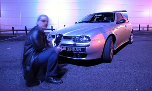
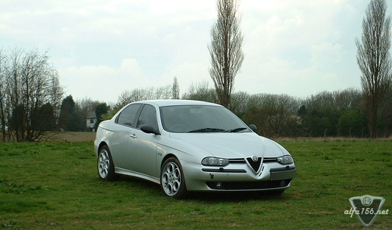
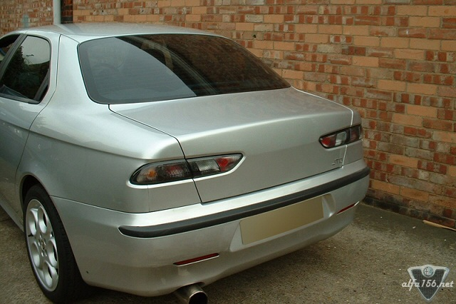
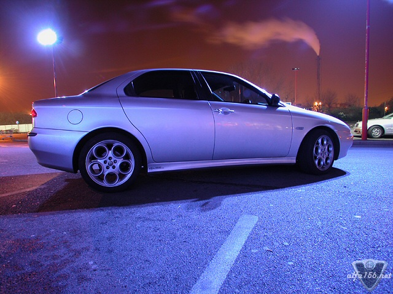
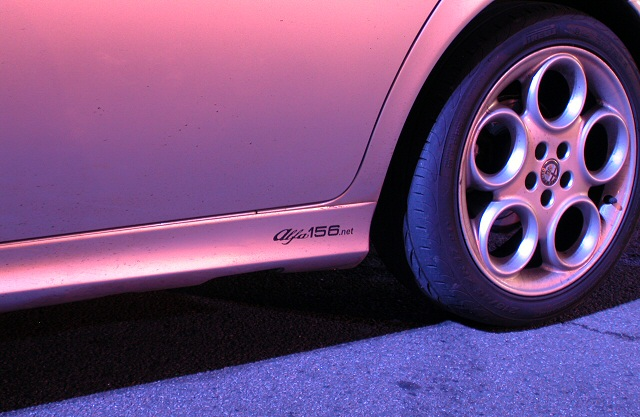
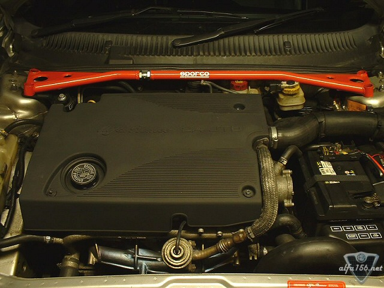

|
| .: 156 Owner profile, May :. |
| Name: Aldo Anthony Viola Forum nick: remapped Age: 26 Gender: Male Location: North London UK. Occupation: : Engineer / modding and remapping cars. |
 |





| .: 156 Owner profile, May :. |